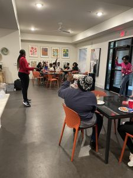

<?xml version="1.0" encoding="UTF-8"?><rss version="2.0"
	xmlns:content="http://purl.org/rss/1.0/modules/content/"
	xmlns:wfw="http://wellformedweb.org/CommentAPI/"
	xmlns:dc="http://purl.org/dc/elements/1.1/"
	xmlns:atom="http://www.w3.org/2005/Atom"
	xmlns:sy="http://purl.org/rss/1.0/modules/syndication/"
	xmlns:slash="http://purl.org/rss/1.0/modules/slash/"
	>

<channel>
	<title>Uncategorized Archives - Four Corners Group</title>
	<atom:link href="./category/uncategorized/feed/" rel="self" type="application/rss+xml" />
	<link>./category/uncategorized/</link>
	<description></description>
	<lastBuildDate>Tue, 29 Jul 2025 18:27:32 +0000</lastBuildDate>
	<language>en-US</language>
	<sy:updatePeriod>
	hourly	</sy:updatePeriod>
	<sy:updateFrequency>
	1	</sy:updateFrequency>
	<generator>https://wordpress.org/?v=6.9</generator>

<image>
	<url>../../../wp-content/uploads/2022/05/FOUR_CORNERS_GROUP_LOGO_235x235-150x150.jpg</url>
	<title>Uncategorized Archives - Four Corners Group</title>
	<link>./category/uncategorized/</link>
	<width>32</width>
	<height>32</height>
</image> 
	<item>
		<title>Register now for Fall Semester Youth Programs!</title>
		<link>./register-now-for-fall-semester-youth-programs/</link>
		
		<dc:creator><![CDATA[brian.holben]]></dc:creator>
		<pubDate>Tue, 29 Jul 2025 18:27:32 +0000</pubDate>
				<category><![CDATA[Uncategorized]]></category>
		<guid isPermaLink="false">../../../../?p=9468</guid>

					<description><![CDATA[<p>Are you frustrated and uncertain where to turn with your youth student? Need help as a parent? We understand! Our Pathways to Success Youth Program and Team have success working with youth and students struggling to find the right path in life. We want to offer you a network of support and opportunities to help [&#8230;]</p>
<p>The post <a href="./register-now-for-fall-semester-youth-programs/">Register now for Fall Semester Youth Programs!</a> appeared first on <a href="../../../../en">Four Corners Group</a>.</p>
]]></description>
										<content:encoded><![CDATA[<span class="OYPEnA font-feature-liga-off font-feature-clig-off font-feature-calt-off text-decoration-none text-strikethrough-none">Are you frustrated and uncertain where to turn with your youth student? Need help as a parent? We understand! Our Pathways to Success Youth Program and Team have success working with youth and students struggling to find the right path in life. We want to offer you a network of support and opportunities to help your student become the best version of themself by becoming a part of their journey and guiding them toward their pathway to a thriving adulthood. Our programs are here to help!</span>

Register now for our Fall Semester of programs &#8211; beginning the week of September 8th at our 3 metro Atlanta locations (Cobb County &#8211; Austell, Cobb County &#8211; Marietta, Atlanta).

To register now, visit:  <a href="https://www.fourcornersgroup.net/pathways">www.fourcornersgroup.net/pathways</a>

<p>The post <a href="./register-now-for-fall-semester-youth-programs/">Register now for Fall Semester Youth Programs!</a> appeared first on <a href="../../../../en">Four Corners Group</a>.</p>
]]></content:encoded>
					
		
		
			</item>
		<item>
		<title>Sponsor a Pathways Night</title>
		<link>./sponsor-a-pathways-night/</link>
		
		<dc:creator><![CDATA[brian.holben]]></dc:creator>
		<pubDate>Thu, 01 Feb 2024 19:56:34 +0000</pubDate>
				<category><![CDATA[Uncategorized]]></category>
		<guid isPermaLink="false">../../../../?p=8963</guid>

					<description><![CDATA[<p>Is your business, company, or organization interested in impacting Cobb County youth? Then sign up to sponsor a &#8220;Career Night&#8221; at our Pathways to Success youth development program this semester! You&#8217;ll have the opportunity to provide a meal for our program participants, share about your field/business and career, and then do a short Q&#38;A with [&#8230;]</p>
<p>The post <a href="./sponsor-a-pathways-night/">Sponsor a Pathways Night</a> appeared first on <a href="../../../../en">Four Corners Group</a>.</p>
]]></description>
										<content:encoded><![CDATA[

Is your business, company, or organization interested in impacting Cobb County youth? Then sign up to sponsor a &#8220;Career Night&#8221; at our Pathways to Success youth development program this semester! You&#8217;ll have the opportunity to provide a meal for our program participants, share about your field/business and career, and then do a short Q&amp;A with teens looking to change their trajectory in life. For more info, please reach out to Renee McCormick at:  renee.mccormick@fourcornersgroup.net<p>The post <a href="./sponsor-a-pathways-night/">Sponsor a Pathways Night</a> appeared first on <a href="../../../../en">Four Corners Group</a>.</p>
]]></content:encoded>
					
		
		
			</item>
	</channel>
</rss>
